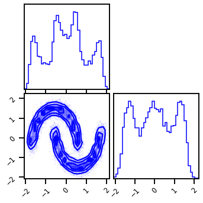
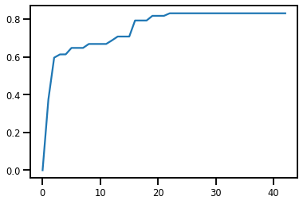
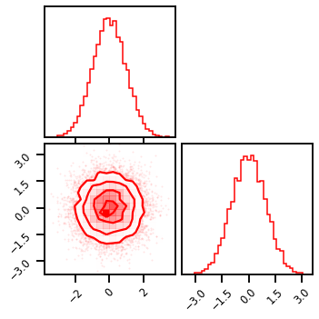
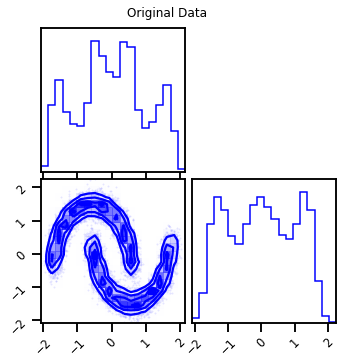
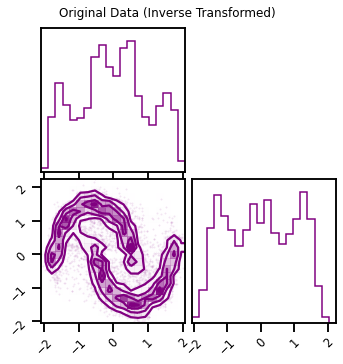
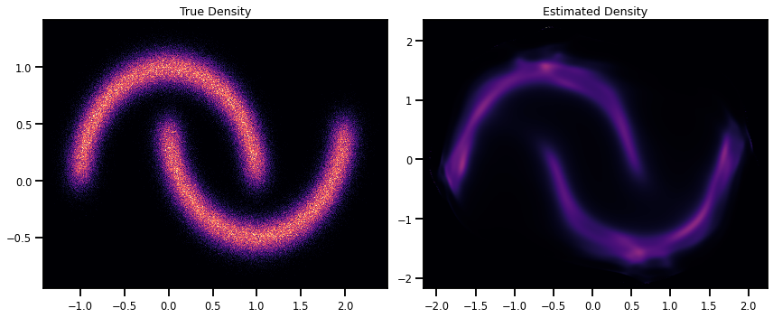
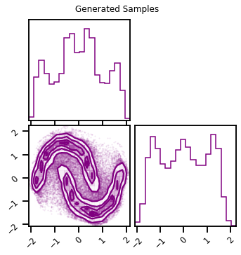

Demo - Iterative Gaussianization¶
# @title Install Packages
# %%capture
try:
import sys, os
from pyprojroot import here
# spyder up to find the root
root = here(project_files=[".here"])
# append to path
sys.path.append(str(root))
except ModuleNotFoundError:
import os
os.system("pip install chex")
os.system("pip install git+https://github.com/IPL-UV/rbig_jax.git#egg=rbig_jax")
# jax packages
import jax
import jax.numpy as jnp
from jax.config import config
import chex
config.update("jax_enable_x64", False)
import numpy as np
from functools import partial
# logging
import tqdm
import wandb
# plot methods
import matplotlib.pyplot as plt
import seaborn as sns
import corner
sns.reset_defaults()
sns.set_context(context="talk", font_scale=0.7)
%load_ext lab_black
%matplotlib inline
%load_ext autoreload
%autoreload 2
Data¶
from rbig_jax.data import SCurveDataset, MoonsDataset
from sklearn.preprocessing import StandardScaler
# %%wandb
# get data
seed = 123
n_samples = 1_000_000
n_features = 2
noise = 0.1
ds = MoonsDataset(n_samples=n_samples, noise=noise, seed=seed)
# def load_data(n_samples, seed):
# dataset = Dataset2D(n_samples=n_samples, seed=seed)
# data = dataset.load_s_curve()
# return data
data = ds[:10_000]
X_plot = ds[10_000:]
data = StandardScaler().fit_transform(data)
# plot data
fig = corner.corner(data, color="blue", hist_bin_factor=2)

Initialization¶
First we need to initialize our RBIG method with some parameters. For example, which marginal gaussianization method, what precision do we want, and what rotation method do we want.
method- the method used to marginally transform the data. We have histogram or kde currently implementedsupport_extension- this is the amount we want to extend the support for our marginal distributions. Higher values indicate higherprecision- we use interpolation because it is much faster. So the CDF, PDF and PPF are interpolation schemes. This value will allow one to have more “precision” for the estimated quantities but it will be slower.
X = np.array(data, dtype=np.float32)
RBIG Algorithm¶
from rbig_jax.models import RBIG
# a lot of parameters...
support_extension = 10
precision = 1_000
eps = 1e-5
method = "kde"
# Histogram specific params
nbins = None
alpha = 1e-1
# KDE specific params
bw = "scott"
# info reduction loss parameters
max_layers = 500
zero_tolerance = 60
p = 0.25
base = 2
# initialize the max layers parameters
verbose = True
n_layers_remove = 40
interval = 10
# everything (makes it fast...)
jitted = True
X_g, rbig_model = RBIG(
X=X,
support_extension=support_extension,
method=method,
precision=precision,
alpha=alpha,
nbins=nbins,
bw=bw,
eps=eps,
max_layers=max_layers,
zero_tolerance=zero_tolerance,
p=p,
base=base,
verbose=verbose,
n_layers_remove=n_layers_remove,
interval=interval,
jitted=jitted,
)
Layer 10 - Cum. Info Reduction: 0.668 - Elapsed Time: 3.4073
Layer 20 - Cum. Info Reduction: 0.817 - Elapsed Time: 3.7420
Layer 30 - Cum. Info Reduction: 0.831 - Elapsed Time: 4.0495
Layer 40 - Cum. Info Reduction: 0.831 - Elapsed Time: 4.3574
Layer 50 - Cum. Info Reduction: 0.831 - Elapsed Time: 4.6689
Layer 60 - Cum. Info Reduction: 0.831 - Elapsed Time: 4.9800
Layer 70 - Cum. Info Reduction: 0.831 - Elapsed Time: 5.2925
Layer 80 - Cum. Info Reduction: 0.831 - Elapsed Time: 5.6049
Converged at Layer: 83
Final Number of layers: 43 (Blocks: 14)
Total Time: 5.7031
Final Loss¶
plt.plot(np.cumsum(rbig_model.info_loss))
plt.show()

Visualize¶
fig = corner.corner(X_g, color="red", hist_bin_factor=2)

%%time
# inverse cascade
X_g_ = rbig_model.forward(X)
# plot
fig = corner.corner(X_g_, color="red", hist_bin_factor=2)
CPU times: user 4.69 s, sys: 379 ms, total: 5.07 s
Wall time: 4.16 s
Inverse Transformation¶
# inverse cascade
X_approx = rbig_model.inverse(X_g)
# plot
fig = corner.corner(X, color="blue", label="Original Data")
fig.suptitle("Original Data")
plt.show()
fig = corner.corner(X_approx, color="purple")
fig.suptitle("Original Data (Inverse Transformed)")
plt.show()


Density Estimation¶
from rbig_jax.data import generate_2d_grid
%%time
# generate inputs
xyinput = generate_2d_grid(X, 500, buffer=0.1)
X_log_prob = rbig_model.score_samples(xyinput)
CPU times: user 23.8 s, sys: 2.8 s, total: 26.6 s
Wall time: 6.85 s
from matplotlib import cm
# # Original Density
# n_samples = 1_000_000
# n_features = 2
# X_plot = load_data(n_samples, 42)
# X_plot = StandardScaler().fit_transform(X_plot)
# Estimated Density
cmap = cm.magma # "Reds"
probs = jnp.exp(X_log_prob)
# probs = np.clip(probs, 0.0, 1.0)
# probs = np.clip(probs, None, 0.0)
cmap = cm.magma # "Reds"
# cmap = "Reds"
fig, ax = plt.subplots(ncols=2, figsize=(12, 5))
h = ax[0].hist2d(
X_plot[:, 0], X_plot[:, 1], bins=512, cmap=cmap, density=True, vmin=0.0, vmax=1.0
)
ax[0].set_title("True Density")
ax[0].set(
xlim=[X_plot[:, 0].min(), X_plot[:, 0].max()],
ylim=[X_plot[:, 1].min(), X_plot[:, 1].max()],
)
h1 = ax[1].scatter(
xyinput[:, 0], xyinput[:, 1], s=1, c=probs, cmap=cmap, vmin=0.0, vmax=1.0
)
ax[1].set(
xlim=[xyinput[:, 0].min(), xyinput[:, 0].max()],
ylim=[xyinput[:, 1].min(), xyinput[:, 1].max()],
)
# plt.colorbar(h1)
ax[1].set_title("Estimated Density")
plt.tight_layout()
plt.show()

Generate Samples¶
%%time
# number of samples
n_samples = 100_000
seed = 42
X_samples = rbig_model.sample(seed=seed, n_samples=n_samples)
CPU times: user 5.36 s, sys: 437 ms, total: 5.8 s
Wall time: 2.37 s
fig = corner.corner(X, color="blue", label="Original Data")
fig.suptitle("Original Data")
plt.show()
fig2 = corner.corner(X_samples, color="purple")
fig2.suptitle("Generated Samples")
plt.show()
